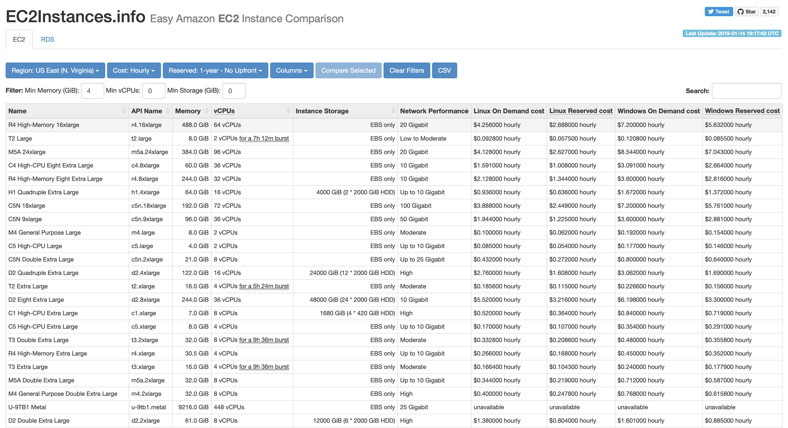

When working with EC2 instances, you really want to be right sizing the instance from the outset. With Amazon regularly bringing out new classes of instance it is hard to keep track of what is available now and what the characteristics are.
Some time ago I came across EC2Instances.info. This site regularly scrapes the instance information pages in the AWS documentation to gather the latest data about available instances and aggregate it all together.

The functionality I find most useful is when I know I want for example 4GB or RAM, I can filter to get the list of all suitable, then sort them in ascending order and apply additional search criteria.
Next time you’re looking for an instance type, its worth a look.